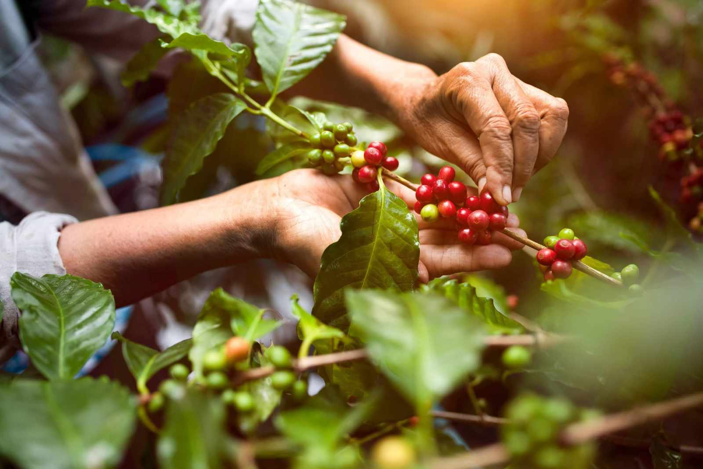

Na Dama Cafés, o café não é apenas o nosso negócio; é o fio que costura nossa história de geração em geração, da lavoura à sua xícara, com tecnologia, tradição e o selo de qualidade da ABIC.
Estrutura industrial de alta performance, controle de qualidade rigoroso e capacidade para atender grandes redes, distribuidores e projetos de Private Label.
Solicitar proposta
A escolha perfeita para quem busca desacelerar e se reconectar com a verdadeira essência da terra através de uma bebida equilibrada, elegante e cheia de vida.
Ver a linha completa
Feito para quem valoriza os bons momentos. Grãos selecionados, tradição e confiança em cada xícara.
Explorar linha Alma Serrana Café · Tradição que você confiaPerfil robusto e aroma marcante para paladares exigentes. Torrado e moído com precisão industrial.
Explorar linha Sonho NeroO que começou no silêncio acolhedor do campo, no trato diário e respeitoso com a terra, floresceu em uma estrutura robusta e moderna, pronta para levar a essência do café brasileiro de alta qualidade para o mercado nacional e internacional.
Unimos a sabedoria da tradição à precisão do amanhã, com selo de qualidade ABIC em todo o nosso portfólio.
Conheça a Dama Cafés
Preencha o formulário ao lado e nossa equipe comercial retorna com uma proposta sob medida para revenda, distribuição, food service ou marca própria.